Anja

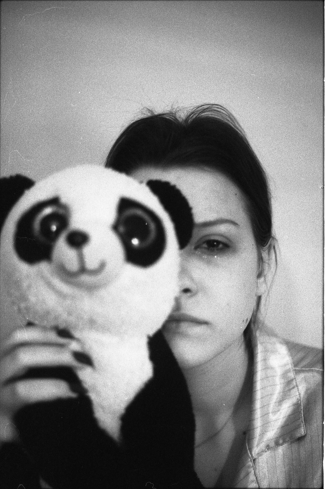
This body of work explores the harrowing journey of a young woman whose life was altered by severe food poisoning, medical misdiagnosis, and an unnecessary surgery that led to two years of adapting to life with a stoma.
Through this project, I aim to illuminate the profound impact of her suffering and resilience. Her story highlights the often-overlooked realities of medical missteps - how they can disrupt not just physical health, but also emotional well-being and identity. The emotional weight of her experience serves as a poignant reminder of the critical importance of compassion and diligence in healthcare.
Through black-and-white analog photography, the series captures the raw tension between hope and despair, illuminating the hidden emotional weight, disrupted identity, and quiet resilience behind medical missteps.
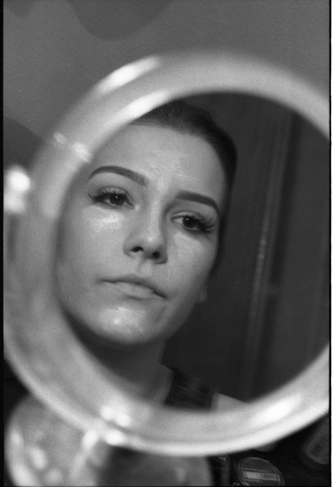
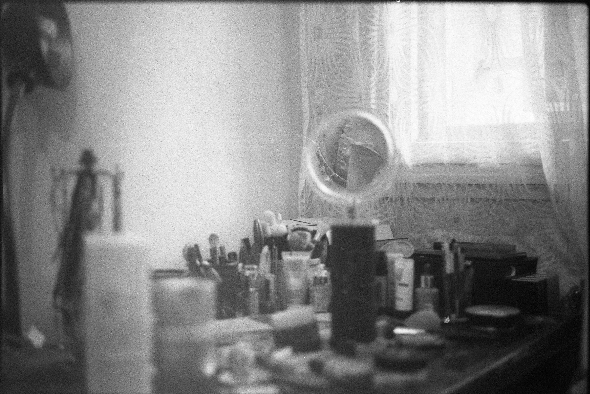
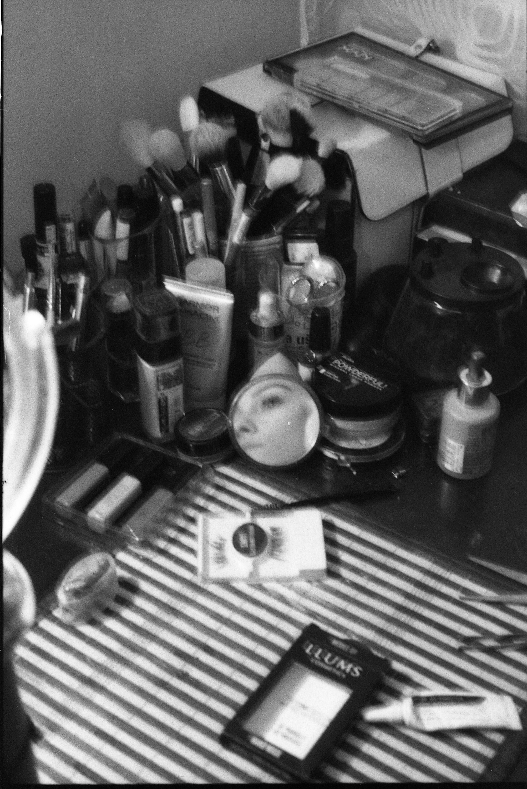
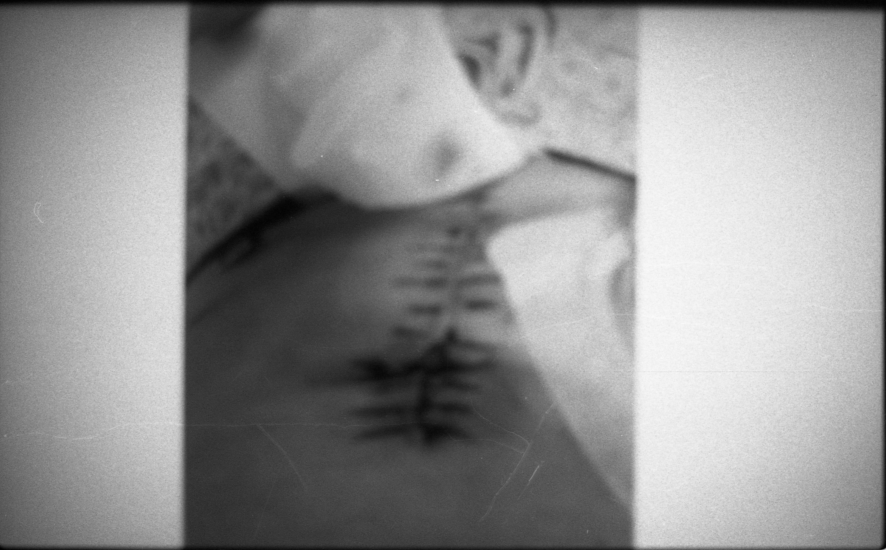
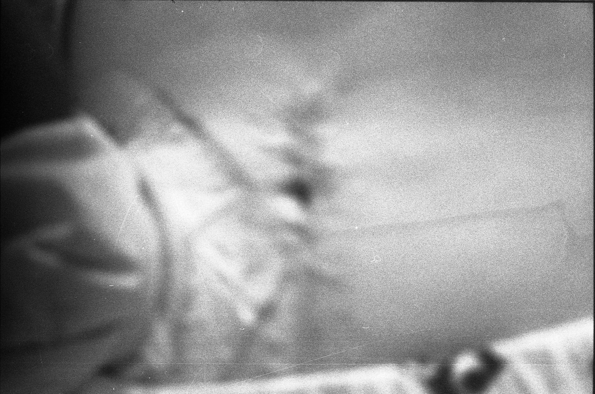
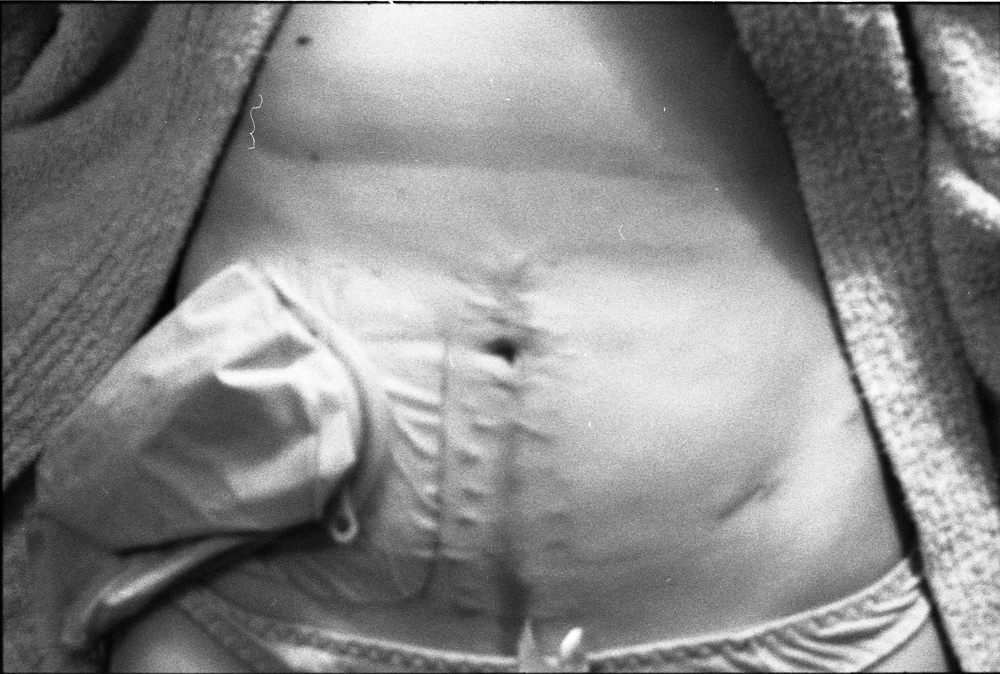
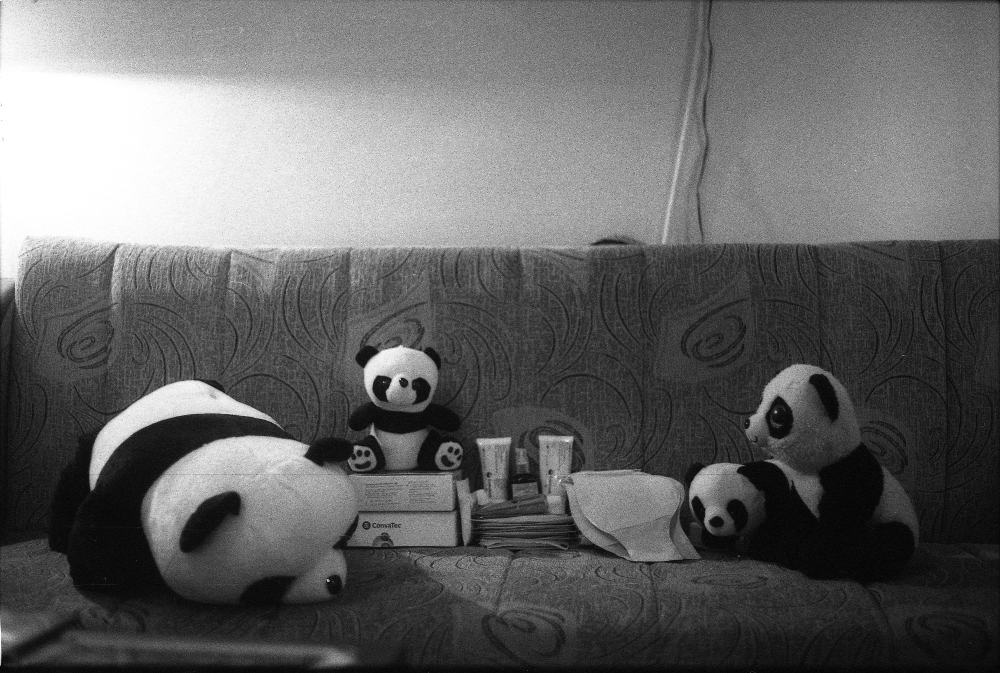
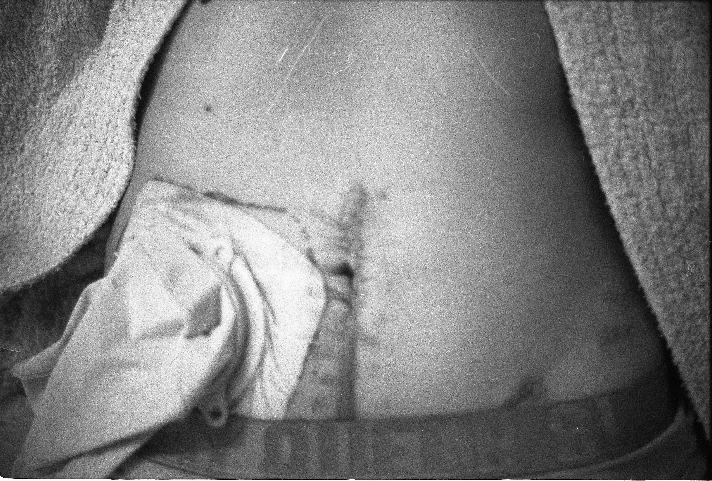
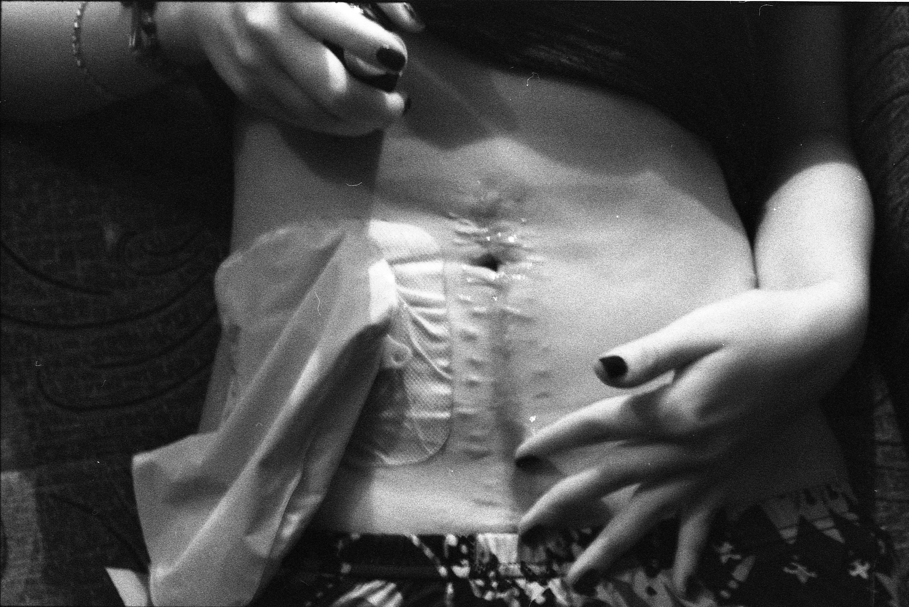
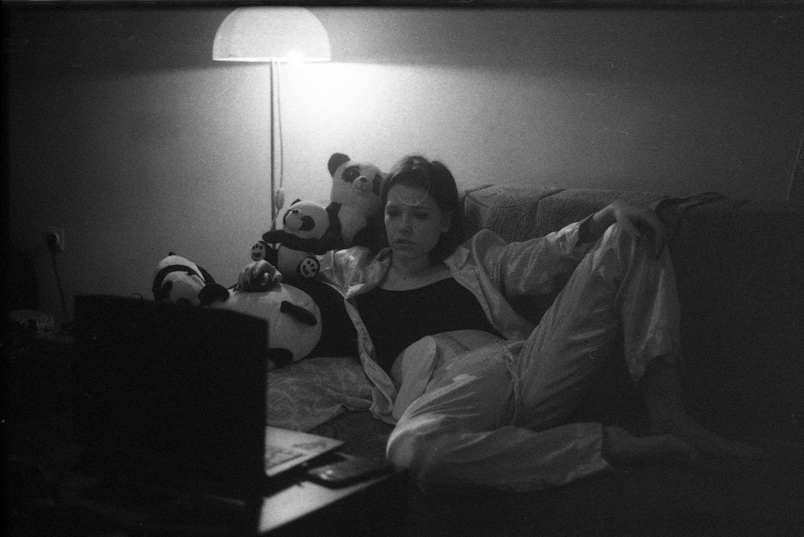
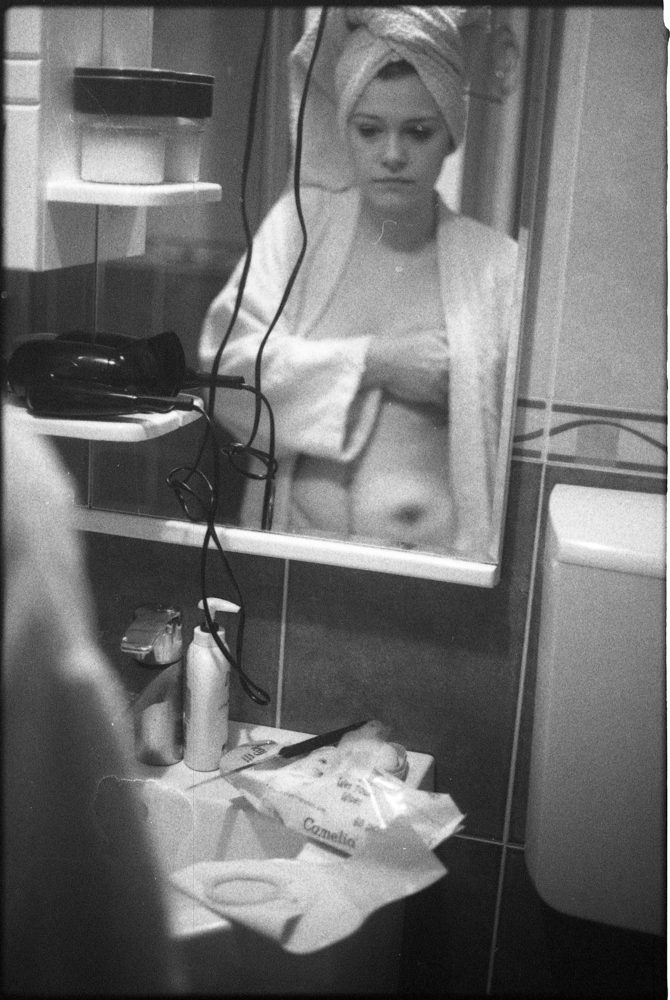
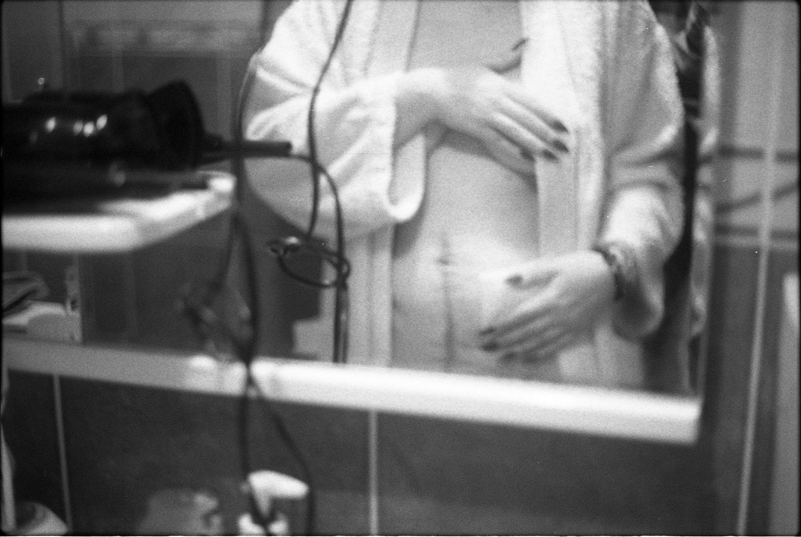
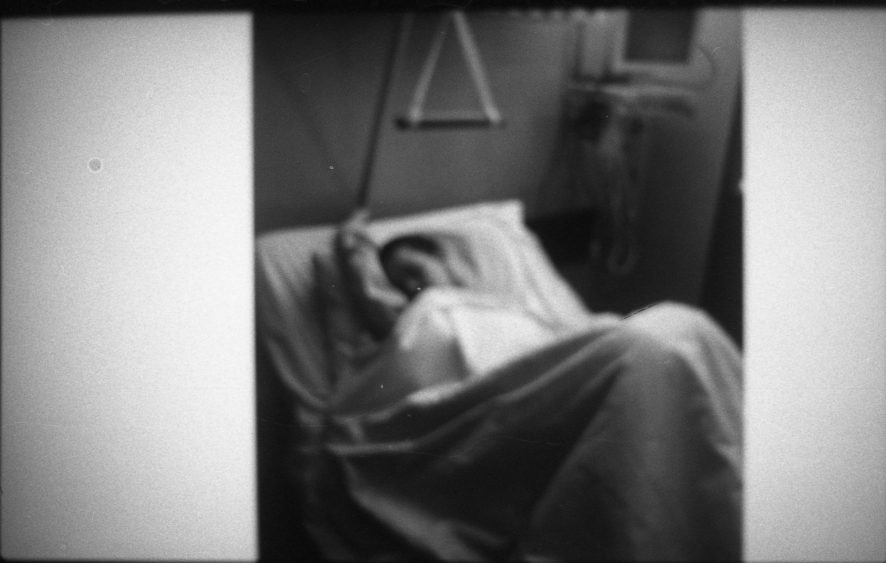
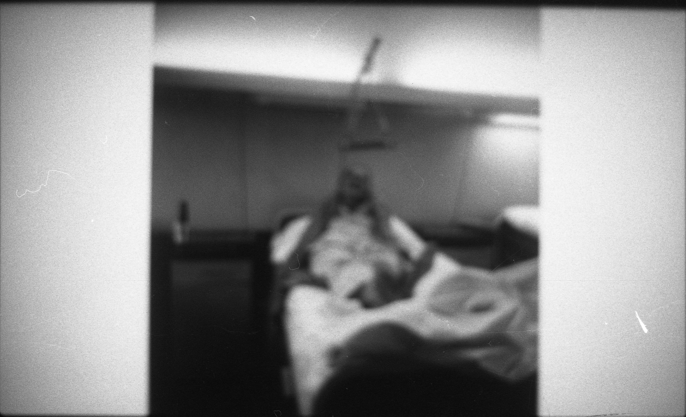